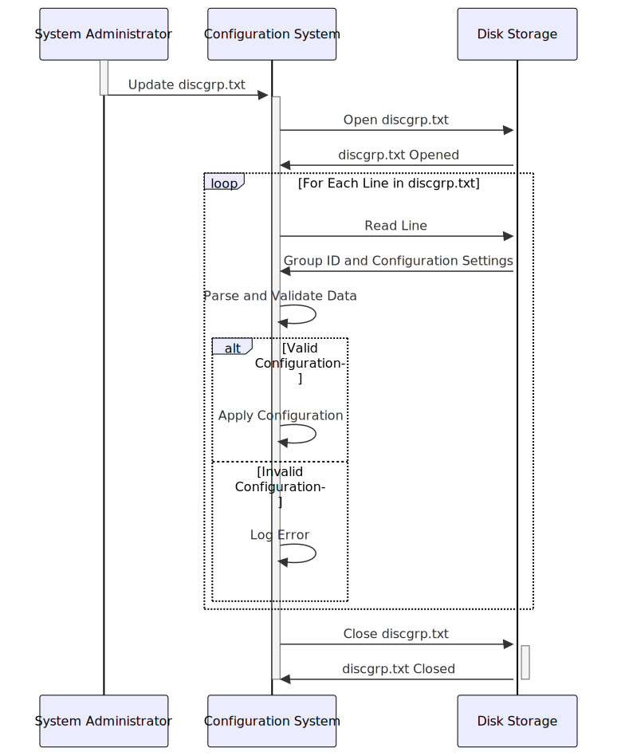

Gerado em: 1º de outubro de 2024
Título do Documento: Analisador de Configuração de Alocação de Grupo de Discos
Descrição Resumida:
Este documento descreve um sistema responsável por ler e interpretar um arquivo de configuração que define como os dados devem ser organizados e alocados entre diferentes grupos de armazenamento.
Histórias do Usuário:
Como administrador do sistema, preciso de uma maneira de definir como os dados são agrupados e armazenados para que eu possa otimizar o desempenho e gerenciar o espaço de armazenamento com eficácia.
Épico Relacionado:
10 - Gerenciamento de Arquivos de Dados
Requisitos Funcionais:
- Ler Arquivo de Configuração: O sistema deve ser capaz de ler e analisar o conteúdo do arquivo de configuração
discgrp.txt.
- Identificar Grupos de Dados: O sistema deve identificar corretamente cada grupo de dados exclusivo listado no arquivo (por exemplo, ‘A000000000010001’, ‘ZEROAPR’, ‘DEFAULT’).
- Extrair Valores de Configuração: Para cada grupo de dados, o sistema deve extrair os valores de configuração associados.
- Aplicar Configuração Padrão: Se um grupo de dados específico não tiver uma configuração exclusiva, o sistema deverá aplicar uma configuração ‘DEFAULT’ predefinida.
Regras de Negócio:
- Identificadores de Grupo Exclusivos: Espera-se que cada grupo de dados tenha um identificador exclusivo. O sistema deve lidar com erros potenciais se identificadores duplicados forem encontrados.
- Formato do Valor de Configuração: Os valores de configuração devem seguir um formato específico. O sistema deve incluir validação para garantir a integridade dos dados e evitar problemas de valores formatados incorretamente.
- Prioridade de Configuração Padrão: A configuração ‘DEFAULT’ atua como um fallback. Qualquer configuração específica para um grupo nomeado substitui essas configurações padrão.
Requisitos Não Funcionais:
- Desempenho: O sistema deve ser capaz de ler e processar o arquivo de configuração de forma rápida e eficiente, especialmente ao lidar com arquivos grandes.
- Confiabilidade: O sistema deve ser confiável na análise precisa do arquivo de configuração e na aplicação das configurações definidas. Quaisquer erros na leitura ou interpretação do arquivo podem levar a armazenamento mal configurado e possíveis problemas de dados.
- Manutenibilidade: O sistema deve ser projetado de forma modular e compreensível para permitir atualizações e modificações fáceis à medida que os requisitos de armazenamento evoluem.
Critérios de Aceitação:
- O sistema lê e analisa com sucesso o arquivo
discgrp.txt sem erros.
- Para cada grupo de dados identificado, o sistema extrai e armazena corretamente os valores de configuração associados.
- O sistema aplica a configuração ‘DEFAULT’ quando apropriado e prioriza corretamente as configurações específicas do grupo em relação aos padrões.
- O sistema registra quaisquer erros encontrados durante o processamento do arquivo ou análise de configuração, fornecendo informações úteis para solução de problemas.
Melhorias de Código:
- Implementar tratamento de erros robusto para gerenciar cenários como um arquivo de configuração ausente, formato de arquivo inválido ou tipos de dados incorretos dentro dos valores de configuração.
- Introduzir o registro em log para registrar as ações do sistema, incluindo quando ele inicia o processamento do arquivo, cada grupo de dados identificado e quaisquer erros encontrados.
- Adicionar comentários ao código para melhorar a legibilidade e o entendimento, especialmente em torno da lógica para analisar os valores de configuração e aplicar os padrões.
Melhorias de Segurança:
- Armazenamento Seguro de Arquivos: Armazene o arquivo
discgrp.txt em um local seguro com controles de acesso apropriados para evitar modificações não autorizadas.
- Validação de Entrada: Implemente validação rígida nos valores de configuração lidos do arquivo para mitigar os riscos associados a dados maliciosos ou malformados.
- Auditoria: Registre todos os acessos e alterações feitas no arquivo de configuração para rastrear quaisquer modificações não autorizadas ou possíveis violações de segurança.
Diagrama Conceitual:

–Made by “Smart Engineering” (by Compass.UOL)–